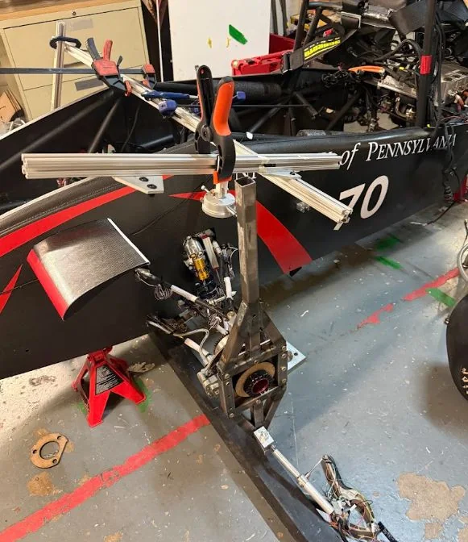
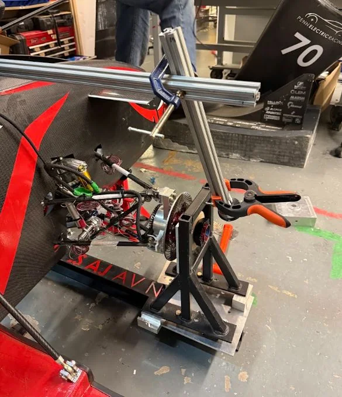
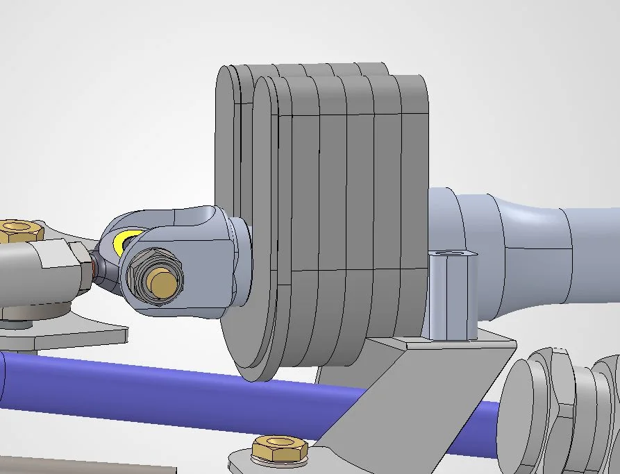
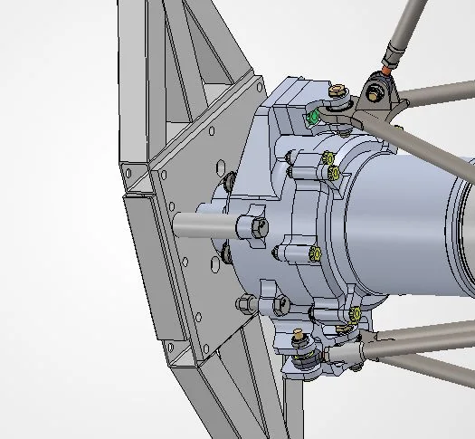
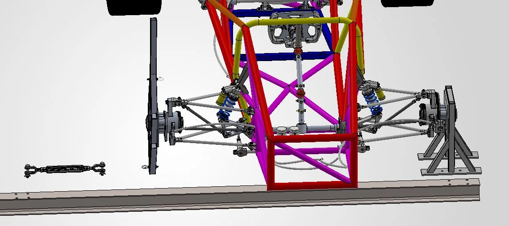
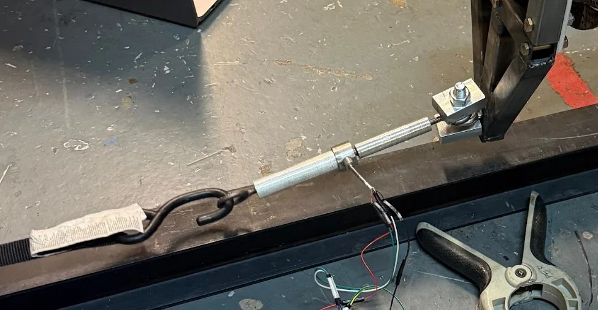
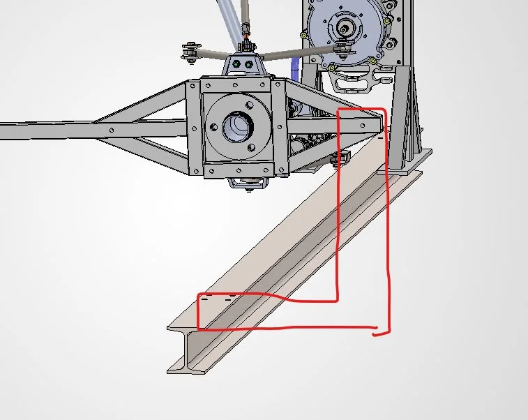

Kinematics and Compliance Test Rig
rebuilding the rig that measures how much the suspension really deflects under cornering load, so the car is set up on measured data instead of CAD assumptions
- project
- 03 of 08
- team
- Penn Electric Racing, suspension
- status
- In design, preliminary design review November 21
- credit
- Three person design team inside the suspension subteam, redesigning the rig for this season.
01why compliance matters
- compliance is how far camber and toe shift for a given lateral load at the contact patch
- every link, bushing and tab in the corner bends a little, and those small deflections add up at the tire
- it is the only way to check that the kinematics designed in CAD actually happen on the car
- with measured compliance, the suspension setup can be tuned to keep the tire at its best angle and get the most grip
02what last season's rig got wrong
- the wheel steered and spun as soon as the pull was applied, so the readings mixed compliance with free motion
- a ratchet strap applied the load, and nothing held its line of action in place
- this season the rig has to do three things: lock the steering rack, stop the hub from turning, and apply a large load that can be measured


03locking the steering rack
- shims slide over the steer bar between the rack housing and the tie rod clevis
- CAD puts that gap at 1.45 inches
- a stack of 1/4, 1/8 and 1/16 inch slotted stainless shims fills it to within 0.0125 inch
- off the shelf parts, so the rack can be locked and unlocked without changing the car

04stopping the hub from turning
- brake rotor and caliper come off for the test
- a spacer bolts from the rig to the caliper mounting point, through a new hole drilled in the rig
- the pull is perpendicular to the rig, so the spacer should carry no load and only stops rotation
- spacers still get their own analysis before machining, to prove they hold the hub fully constrained

05applying a real load, about 2700 N
- a turnbuckle replaces the ratchet strap and is tightened to set the load
- a load cell in line with the turnbuckle reads the force directly
- the far end anchors to a bracket on an I-beam laid under the car, so the line of action stays fixed
- the 1/2 inch thread is rated to 2200 lbf, roughly 3.6 times the test load
- the bracket that ties the turnbuckle to the I-beam is being sized with FEA



06status and next steps
- preliminary design review on November 21
- match the chassis height on jack stands to the I-beam position in CAD
- run FEA on the I-beam bracket to find its failure point
- design a second bracket to measure toe compliance
- calibrate the load cell and machine the hub and castle nut spacers